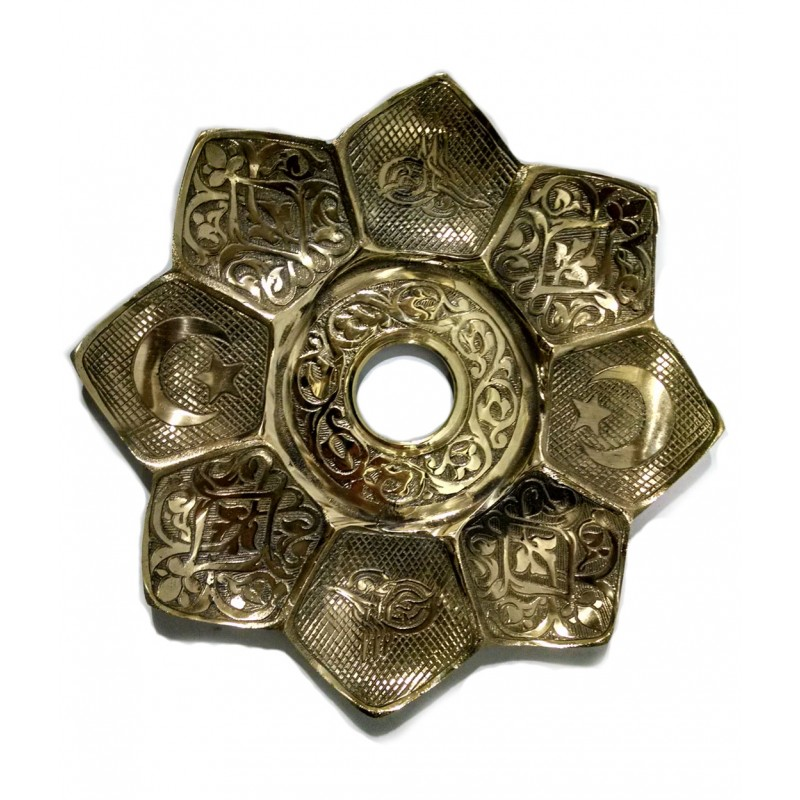
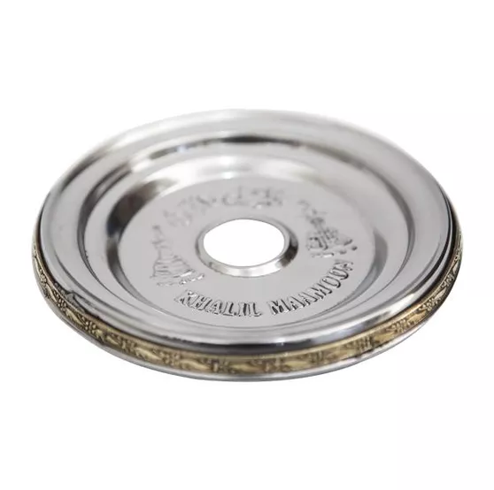
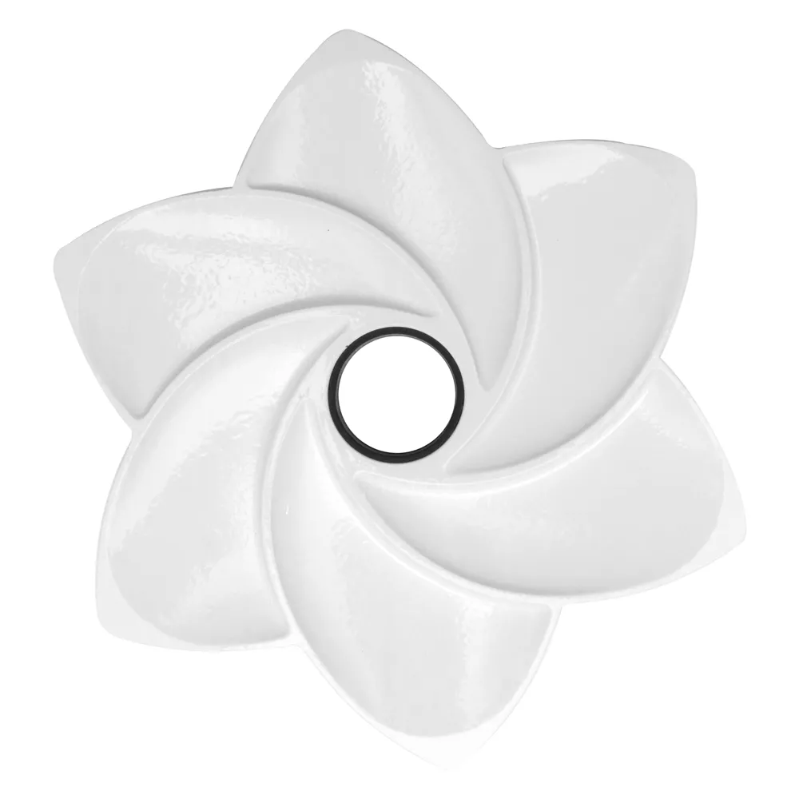
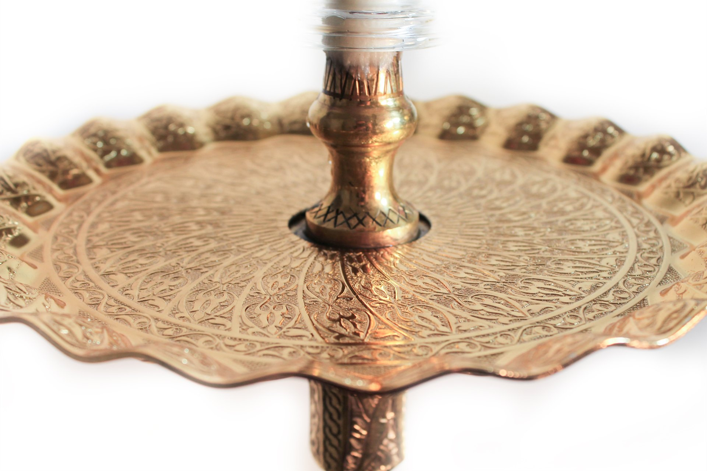

Pratos
Pratos são uma das partes importantes do arguile, na hora de tirar as cinzas do carvão ele é fundamental e quando sem querer alguem esbarra no arguile e cai o carvão do rosh e cai no prato e não no chão.Tambem muito visto como estetica, pois um arguile sem prato não é um arguile visualmente falando.
A seguir irei deixar fotos de pratos de arguiles e pratos que são bem vistos no mundo do arguile.
 
 